How does ribcage and pelvis change their vertical orientation?
We need to look at elevation angles of the 2 planar points (‘sp’ and ‘su’) in the 4th and 1st spinal planes. We take for the ribcage orientation a 'sp4' plane that is perpendicular to T7-T12 with the orientation that was defined by a marker on the bottom of the breastbone.
Summary. Anterior orientation of the ribcage and pelvis
The overage ribcage angles are about 3.6 and 0.3 degrees for the 1st and 2nd group with +/- 5 degrees. Notably, that is about 9 degrees lower than comparing to the starting position for both groups. For the pelvic angles we have small values (-0.8 and -2.5) with +/- 6 degrees and about 1 and 1.7 degrees lower comparing to the angles at the start position.
Than data is grouped by trial identities means deviate more (about 3.6 and 2.5 degrees) than it is grouped by 11 sub-movements for both - ribcage and pelvis. For most of the trials the density plots (grouped by trial identities) look very similar for ribcage and pelvis angles but do show mean shifts. The pelvis and ribcage mean angles grouped by the 11 sub-movements are consistently lower in the 1st group than in the 2nd.
Than we look at two intervals with the symmetrical movement we see that time series for the motion of the ribcage and pelvis in sagittal plane are clearly correlated between both intervals. In most of the trials there is an increase for the angles of pelvis angles in the 2nd motion phase of both intervals and increase in the 3rd. However, the shapes of the time series vary among individuals and are difficult to generalise.
Ribcage, anterior tilting >> 11 sub-movements
| mean | sd | sem | n | NAs | max | min | |
|---|---|---|---|---|---|---|---|
| 1st group | 3.623 | 5.766 | 0.0243 | 56414 | 2113 | 20.7 | -10.54 |
| 2nd group | 0.33 | 5.26 | 0.0251 | 43749 | 1123 | 12 | -24.04 |
| 2001-1st | 11.02 | 5.811 | 1.553 | 14 | 0 | 19.85 | 0.2102 |
| 2001-2nd | 9.39 | 2.527 | 0.762 | 11 | 0 | 14.82 | 5.775 |
Pelvis, anterior tilting >> 11 sub-movements
| mean | sd | sem | n | NAs | max | min | |
|---|---|---|---|---|---|---|---|
| 1st group | -0.8112 | 5.798 | 0.024 | 58527 | 0 | 13.13 | -15.17 |
| 2nd group | -2.521 | 6.026 | 0.0284 | 44872 | 0 | 27.04 | -16.35 |
| 2001-1st | 0.9663 | 4.83 | 1.291 | 14 | 0 | 6.454 | -7.208 |
| 2001-2nd | -0.7714 | 3.922 | 1.183 | 11 | 0 | 5.439 | -6.396 |
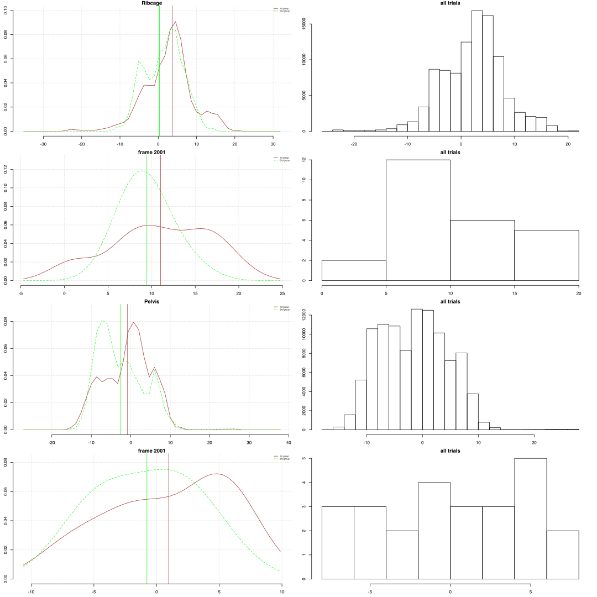
Summary. Lateral orientation of the ribcage and pelvis
In the case of lateral deviations we would expect angles around zero with tilting to sides as a reaction to a movement. On average ribcage and pelvis in both groups are around 0 degrees with +/- 3.2 and 4.6 degrees for ribcage (1st and 2nd group) and +/- 3.5 degrees for pelvis. The ‘normal’ lateral angle of the ribcage in the starting position seems to be left biased (leftwards tilted) by about 1 degree in both groups.
The lateral angles that are grouped by the trial identities suggest that there might be a leftwards bias for the 'normal' orientation of the ribcage in some trials. The ribcage angles that are grouped after the 11 sub-movements show tilting to the left in the 9th to 10th sub-movements and to the right in 5th and 6th. The pelvis angles have a left tilt in 6th sub-movement and to the right in 2nd and 10th.
Furthermore, individual time series for the two time intervals with the symmetrical movements we see that in most of the trials the time series for the motion of the ribcage and pelvis in sagittal plane are mirrored about vertical lines in both intervals.
Pelvis, lateral tilting >> 11 sub-movements
| mean | sd | sem | n | NAs | max | min | |
|---|---|---|---|---|---|---|---|
| 1st group | 0.2793 | 3.201 | 0.0135 | 56414 | 2113 | 11.5 | -12.9 |
| 2nd group | 0.1963 | 4.562 | 0.0218 | 43749 | 1123 | 18.61 | -12.03 |
| 2001-1st | -1.095 | 1.529 | 0.4088 | 14 | 0 | 1.127 | -3.789 |
| 2001-2nd | -1.197 | 1.219 | 0.3675 | 11 | 0 | 0.7793 | -3.423 |
Pelvis, lateral tilting >> 11 sub-movements
| mean | sd | sem | n | NAs | max | min | |
|---|---|---|---|---|---|---|---|
| 1st group | 0.0396 | 3.429 | 0.0142 | 58527 | 0 | 11.41 | -9.356 |
| 2nd group | -0.2459 | 3.518 | 0.0166 | 44872 | 0 | 12.65 | -11.02 |
| 2001-1st | -0.736 | 1.243 | 0.3321 | 14 | 0 | 1.451 | -3.216 |
| 2001-2nd | -0.3014 | 1.459 | 0.4398 | 11 | 0 | 2.703 | -1.905 |
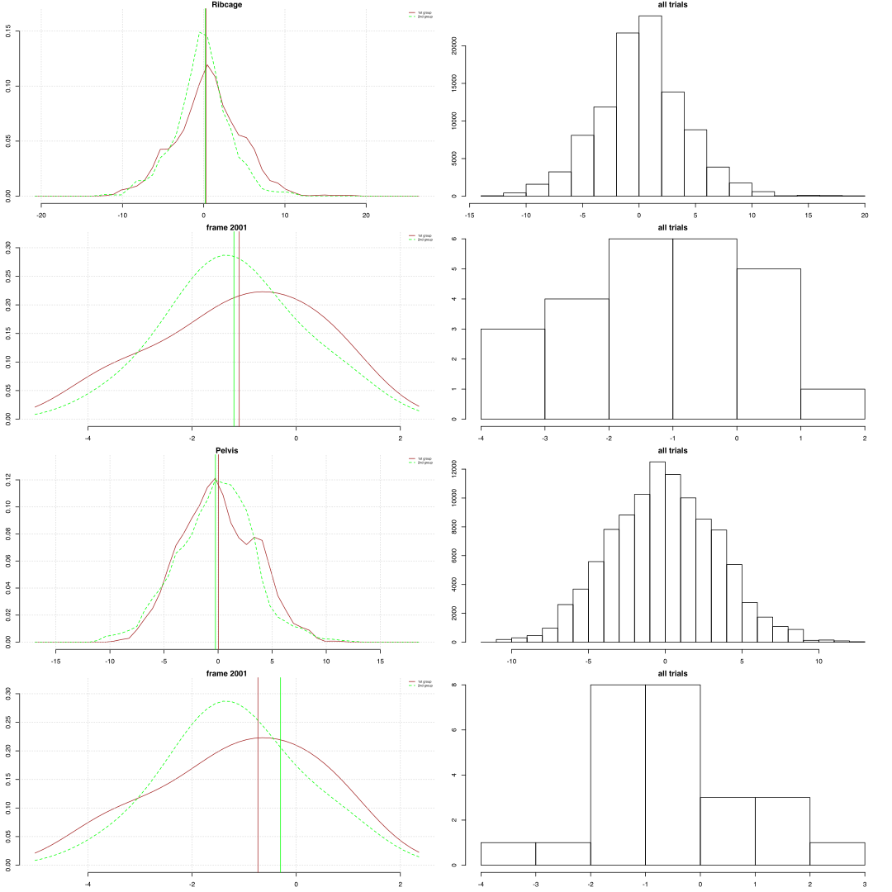
Posterior-anterior orientation of the ribcage and pelvis, grouped by id-trials
Below are boxplots of the elevation angles across different trials for the entire 2nd step of the Short Form. Brown color represents the 1st group and green the 2nd. Horizontal axes are given in degrees of the elevation angles so that positive values correspond to turning upwards. The vertical axes represent grouping factor – identity of the trial.
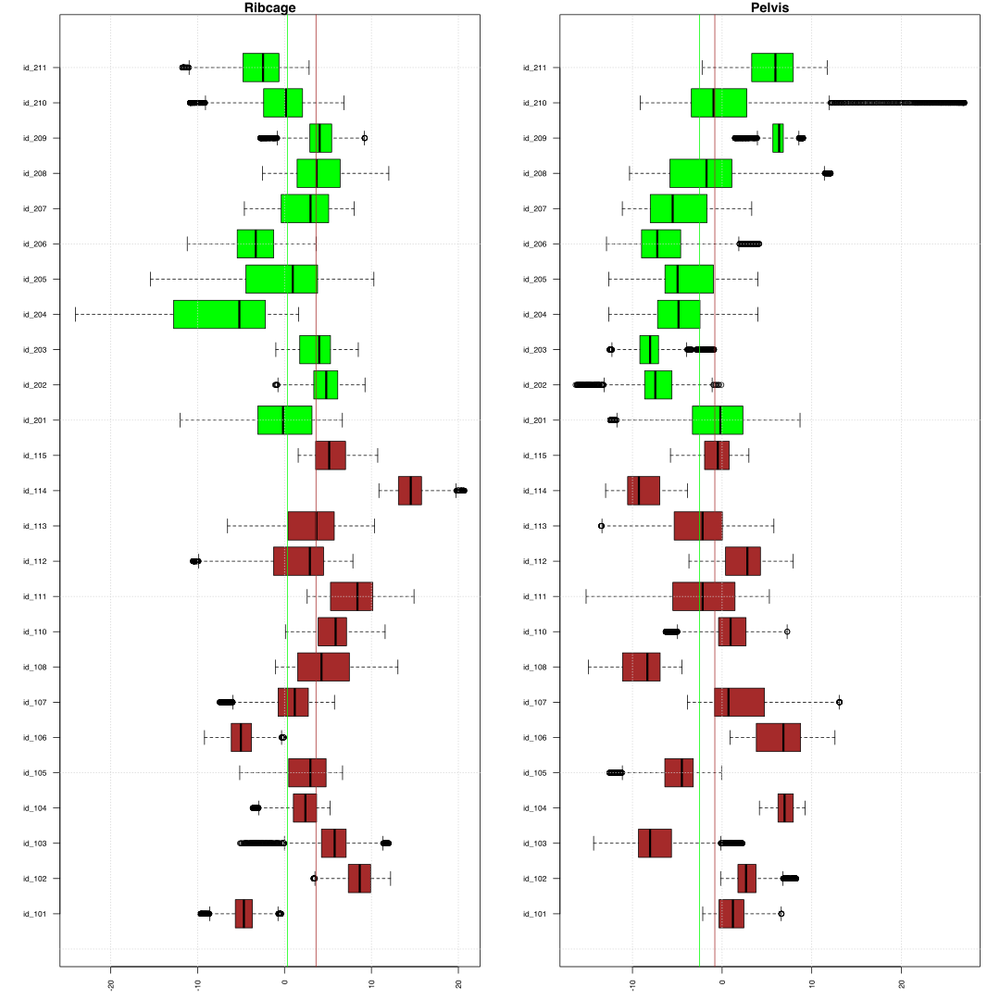
Ribcage, anterior tilting >> 11 sub-movements
| mean | sd | sem | n | NAs | max | min | |
|---|---|---|---|---|---|---|---|
| 1st group | 3.728 | 5.109 | 1.365 | 14 | 0 | 14.62 | -4.978 |
| 2nd group | 0.3742 | 3.953 | 1.192 | 11 | 0 | 4.757 | -7.964 |
Pelvis, anterior tilting >> 11 sub-movements
| mean | sd | sem | n | NAs | max | min | |
|---|---|---|---|---|---|---|---|
| 1st group | -0.8924 | 5.16 | 1.379 | 14 | 0 | 7.051 | -8.884 |
| 2nd group | -2.34 | 4.881 | 1.472 | 11 | 0 | 6.204 | -8.023 |
Density plots of the angle values for the entire 2nd step (11 sub-movements) grouped by the trial identities. Brown color represents the ribcage angles for the 1st group and green the 2nd; vertical lines mark mean value of the corresponding trials; blue vertical lines mark the angle values in the beginning of the form.
Dark orange color represents the pelvis angles for the 1st group and dark green the 2nd; vertical lines mark mean value of the corresponding trials; blue dotted vertical lines mark the angle values in the beginning of the form.

Lateral tilt of the ribcage and pelvis, grouped by id-trials
Below are boxplots of the elevation angles across different trials for the entire 2nd step of the Short Form. Brown color represents the 1st group and green the 2nd. Horizontal axes are given in degrees of the elevation angles positive values correspond to tilting to the right side. The vertical axes represent grouping factor – identity of the trial.
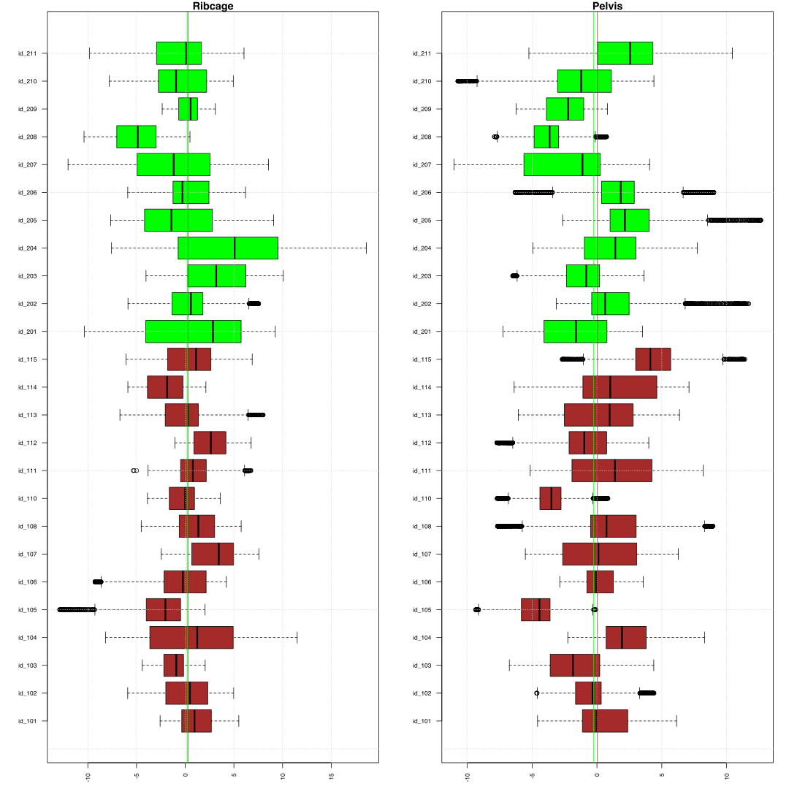
Ribcage, lateral tilting >> 11 sub-movements
| mean | sd | sem | n | NAs | max | min | |
|---|---|---|---|---|---|---|---|
| 1st group | 0.2596 | 1.576 | 0.4212 | 14 | 0 | 2.979 | -2.596 |
| 2nd group | 0.1802 | 2.475 | 0.7463 | 11 | 0 | 4.726 | -4.893 |
Pelvis, lateral tilting >> 11 sub-movements
| mean | sd | sem | n | NAs | max | min | |
|---|---|---|---|---|---|---|---|
| 1st group | 0.0208 | 2.234 | 0.5972 | 14 | 0 | 4.13 | -4.678 |
| 2nd group | -0.3678 | 2.195 | 0.6619 | 11 | 0 | 2.689 | -3.638 |
Density plots of the angle values for the entire 2nd step (11 sub-movements) grouped by the trial identities. Brown color represents the ribcage angles for the 1st group and green the 2nd; vertical lines mark mean value of the corresponding trials; blue vertical lines mark the angle values in the beginning of the form.
Dark orange color represents the pelvis angles for the 1st group and dark green the 2nd; vertical lines mark mean value of the corresponding trials; blue dotted vertical lines mark the angle values in the beginning of the form.
The blue vertical lines might indicate individual biases for the ribcage orientation in trials. So ribcage in ‘id_105’, ‘id_113’, ‘id_115’ trials might be left biased (ribcage is tilted laterally leftwards).

Posterior-anterior tilt of the ribcage and pelvis, grouped by sub-movements
Also we can look at differences in the angles across the 11 sub-movements without differentiating between individual trials. Again, the brown color represents the 1st group and green the 2nd. Horizontal axes are given in degrees of the elevation angles and the vertical axes represent grouping factor – a number of the sub-movement.
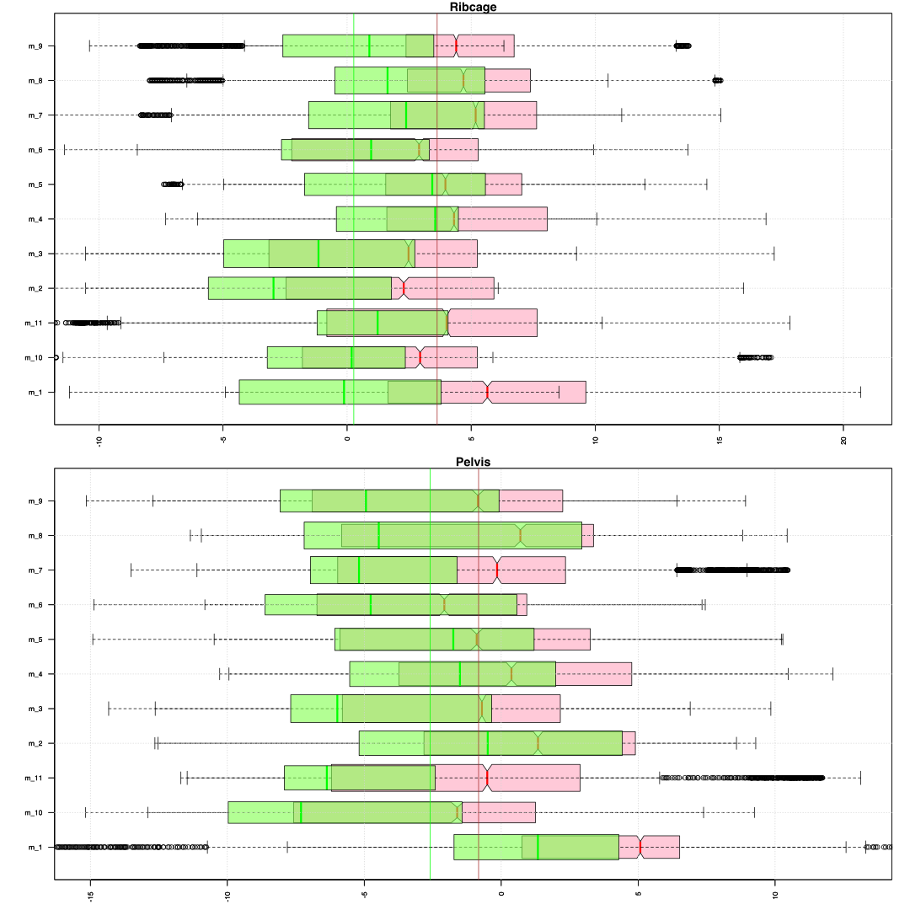
Pelvis, anterior tilting >> 11 sub-movements
| mean | sd | sem | n | NAs | max | min | |
|---|---|---|---|---|---|---|---|
| 1st group | 3.629 | 1.243 | 0.3747 | 11 | 0 | 5.475 | 1.949 |
| 2nd group | 0.2698 | 1.794 | 0.5408 | 11 | 0 | 2.343 | -3.186 |
Pelvis, anterior tilting >> 11 sub-movements
| mean | sd | sem | n | NAs | max | min | |
|---|---|---|---|---|---|---|---|
| 1st group | -0.8257 | 1.84 | 0.5549 | 11 | 0 | 3.562 | -2.949 |
| 2nd group | -2.595 | 2.077 | 0.6264 | 11 | 0 | 1.942 | -5.471 |
Density plots of the angle values grouped by the 11 sub-movements. Brown color represents the 1st group and green the 2nd; vertical lines mark mean value of the corresponding sub-movement for 1st and 2nd group. The 2nd and 3rd rows capture a symmetrical motion sequence: from the left into right bow stance and from the right into left.
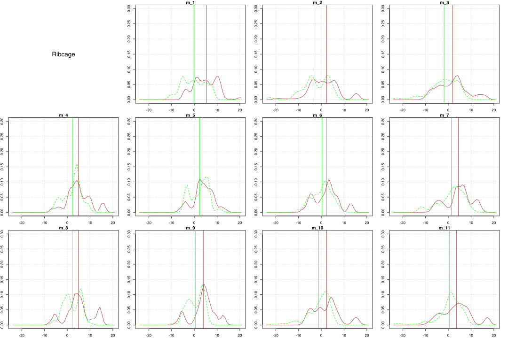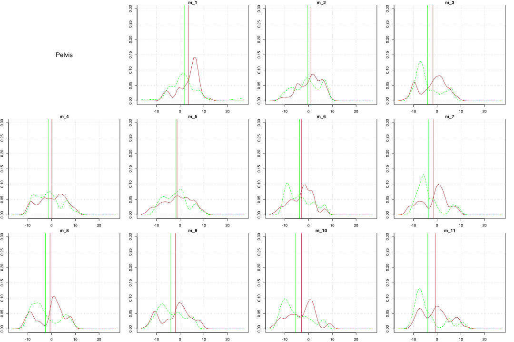
Lateral tilt of the ribcage and pelvis, grouped by sub-movements
Also we can look at differences in the angles across the 11 sub-movements without differentiating between individual trials. Again, the brown color represents the 1st group and green the 2nd. Horizontal axes are given in degrees of the elevation angles and the vertical axes represent grouping factor – a number of the sub-movement.
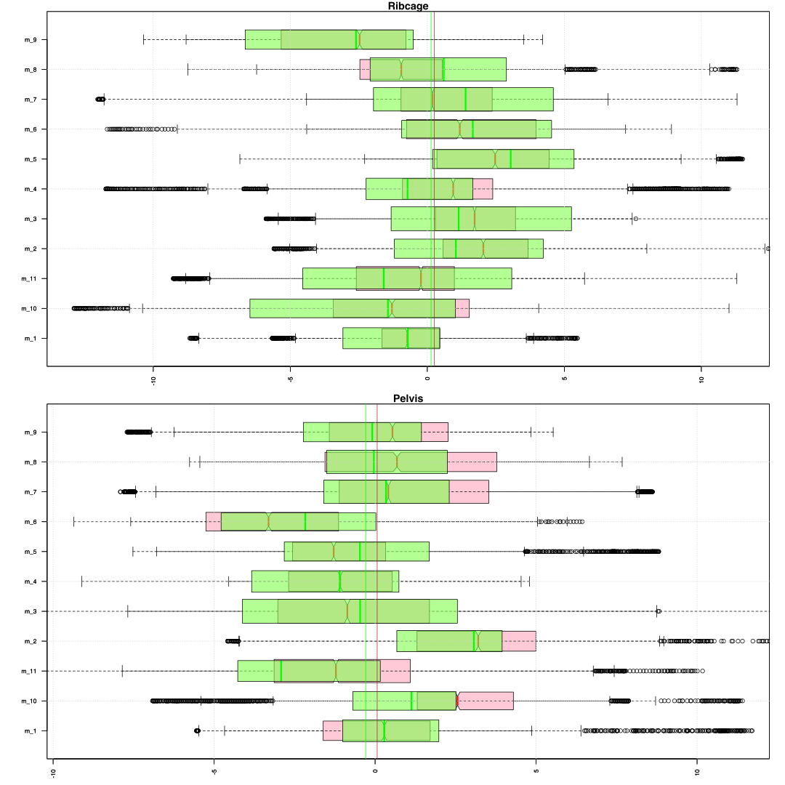
Ribcage, lateral tilting >> 11 sub-movements
| mean | sd | sem | n | NAs | max | min | |
|---|---|---|---|---|---|---|---|
| 1st group | 0.2514 | 1.706 | 0.5145 | 11 | 0 | 2.756 | -2.847 |
| 2nd group | 0.1377 | 1.958 | 0.5903 | 11 | 0 | 2.596 | -3.701 |
Pelvis, lateral tilting >> 11 sub-movements
| mean | sd | sem | n | NAs | max | min | |
|---|---|---|---|---|---|---|---|
| 1st group | 0.0647 | 1.662 | 0.5011 | 11 | 0 | 2.885 | -3.228 |
| 2nd group | -0.292 | 1.452 | 0.4377 | 11 | 0 | 2.514 | -2.392 |
Density plots of the angle values grouped by the 11 sub-movements. Brown color represents the 1st group and green the 2nd; vertical lines mark mean value of the corresponding sub-movement for 1st and 2nd group. The 2nd and 3rd rows capture a symmetrical motion sequence: from the left into right bow stance and from the right into left.
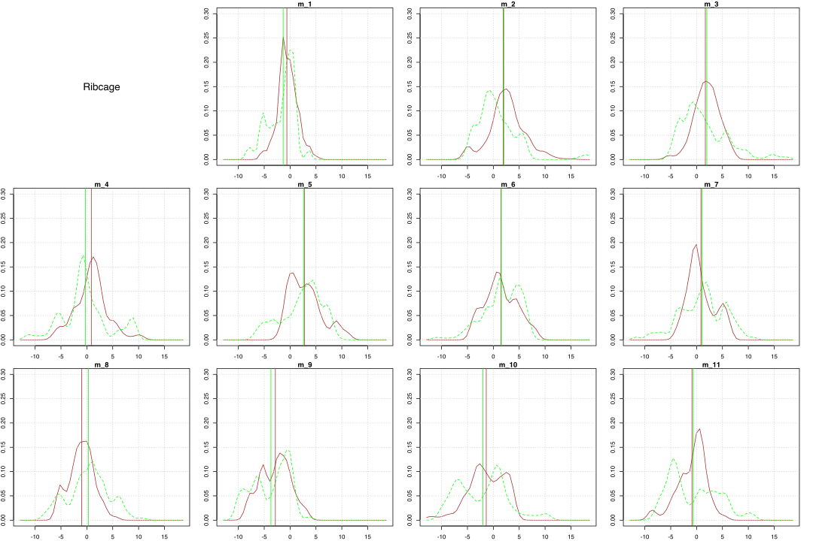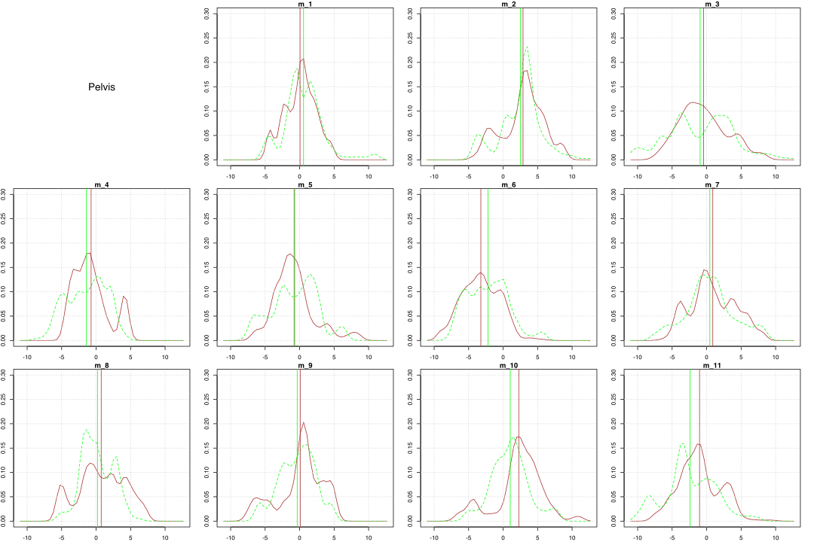
Posterior-anterior tilt of the ribcage and pelvis, grouped by id-trials and sub-movements
Below are boxplots for two intervals of the 2nd step that capture symmetrical body motion: from the left to right bow stance and from the right to left bow stance. The boxplots of these intervals are superimposed for each of the trials. The 1st interval is marked by green color and the 2nd by red (color is not associated with groups).
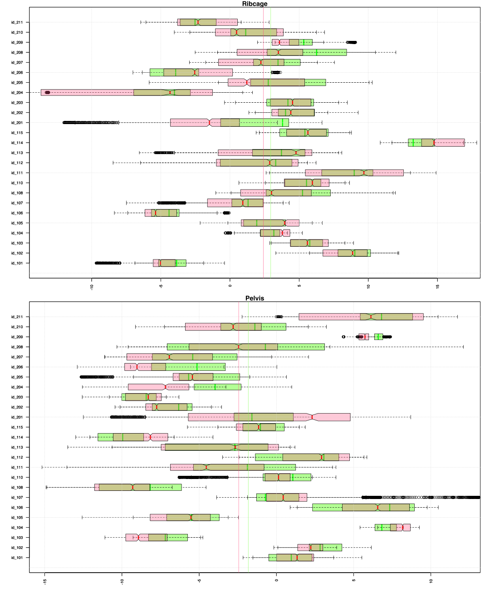
Also, we can differentiate between the different sub-movements within the two intervals and look at them individually. Below are two columns of the boxplots with 4 rows that represent consecutive phases of our two intervals. The 1st column represents the movement from the left to right bow stance (4th - 7th sub-movements), the 2nd column represents the movement from the right to left bow stance (8th - 11th sub-movements).
Brown and green color mark data of the ribcage angles for the 1st and 2nd group. Pale semi-transparent yellow and cyan-green colors mark angles of the pelvis for the 1st and 2nd group.
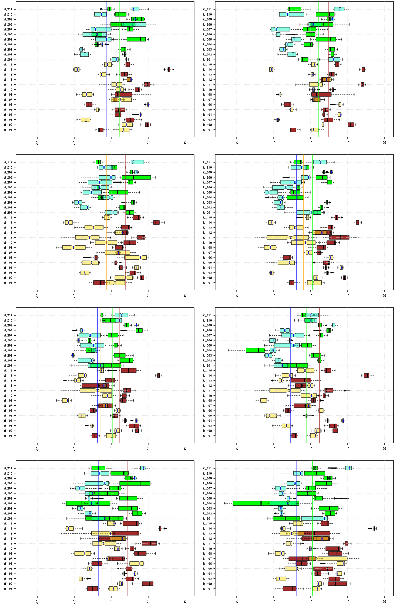
Furthermore we can compare the actual time series for the two intervals. The figure below shows 25 plots for each of the trials with the red color marking the 1st interval and green the 2nd. Vertical lines show boundaries for the four sub-movements within each interval, horizontal lines show means and a blue horizontal line marks the angle value in the 1st frame of the entire performance than a person is in a straight position. Horizontal axis is given in frames with sampling frequency 120 frames per second.
Green is for the ribcage/pelvis angles in the 1st interval (4-7th sub-movements; left to right bow stance); Red is for the ribcage/pelvis angles in the 2nd interval (8-11th sub-movements; right to left bow stance).
Ribcage - two intervals
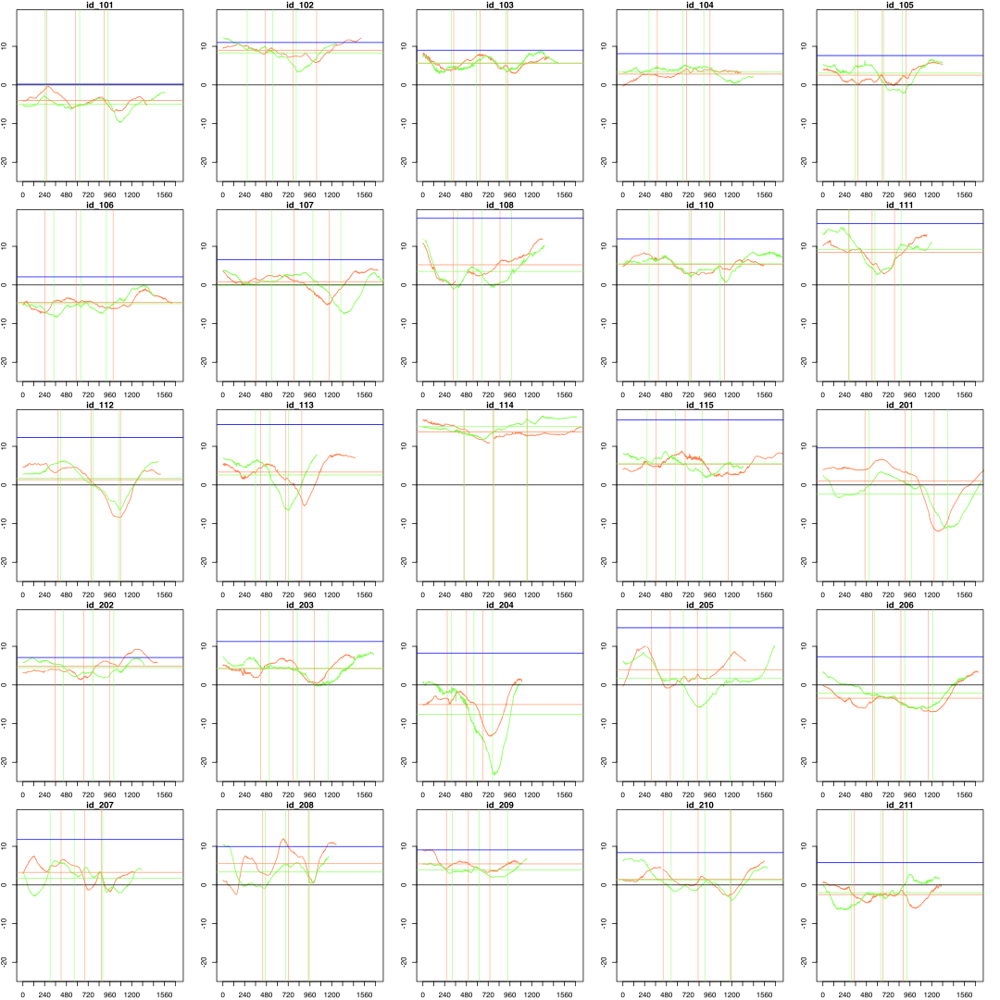
Pelvis - two intervals

Lateral tilt of the ribcage and pelvis, grouped by id-trials and sub-movements
Below are boxplots for two intervals of the 2nd step that capture symmetrical body motion: from the left to right bow stance and from the right to left bow stance. The boxplots of these intervals are superimposed for each of the trials. The 1st interval is marked by green color and the 2nd by red (color is not associated with groups).
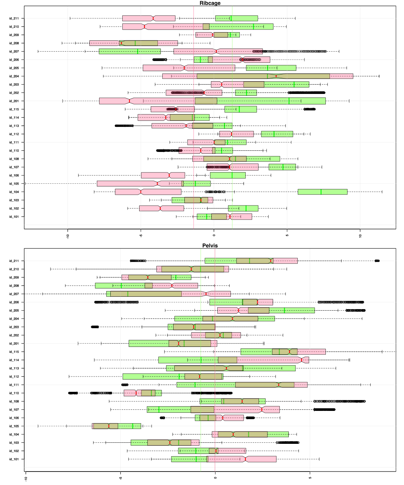
Also, we can differentiate between the different sub-movements within the two intervals and look at them individually. Below are two columns of the boxplots with 4 rows that represent consecutive phases of our two intervals. The 1st column represents the movement from the left to right bow stance (4th - 7th sub-movements), the 2nd column represents the movement from the right to left bow stance (8th - 11th sub-movements).
Brown and green color mark data of the ribcage angles for the 1st and 2nd group. Pale semi-transparent yellow and cyan-green colors mark angles of the pelvis for the 1st and 2nd group.
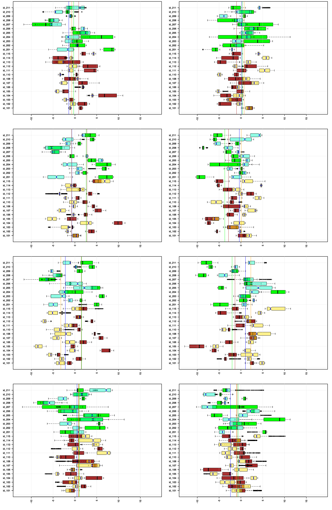
Furthermore we can compare the actual time series for the two intervals. The figure below shows 25 plots for each of the trials with the red color marking the 1st interval and green the 2nd. Vertical lines show boundaries for the four sub-movements within each interval, horizontal lines show means and a blue horizontal line marks the angle value in the 1st frame of the entire performance than a person is in a straight position. Horizontal axis is given in frames with sampling frequency 120 frames per second.
Green is for the ribcage/pelvis angles in the 1st interval (4-7th sub-movements; left to right bow stance); Red is for the ribcage/pelvis angles in the 2nd interval (8-11th sub-movements; right to left bow stance). There might be individual biases of the ribcage orientation in standing position in trials 'id_105', 'id_113', 'id_115', 'id_208','id_209', 'id_211'. Similarly, for the lateral pelvis angles it might be in trials 'id_105', 'id_110', 'id_211'.
Ribcage - two intervals
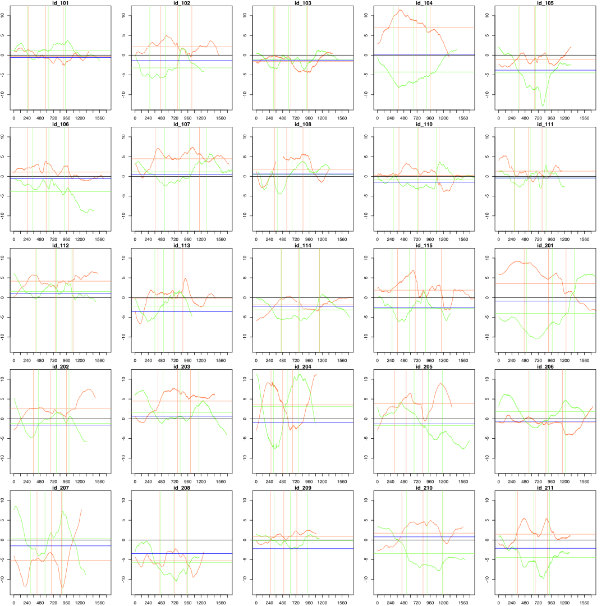
Pelvis - two intervals